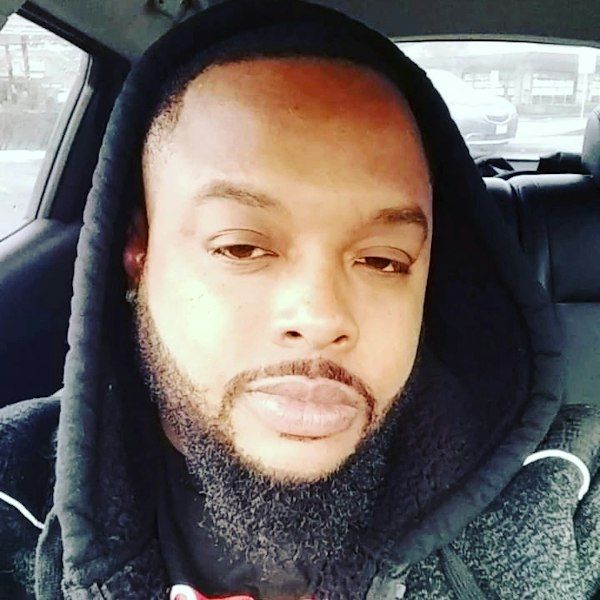

1 · ARTIST-MANAGED SLAPS PORTRAIT
Clear face in daylight

The preserved portrait could not load. Inspect the artist source or public image below.
INSPECTED ORIGINAL · 600 × 600 JPEG
Best use: face proportions, brows, nose, beard and moustache outline, ear stud. This is the strongest detailed facial reference in the set.
Keep separate: this photograph's hood and grey outer layer are not a selected cameo costume. Its original capture date is unknown.